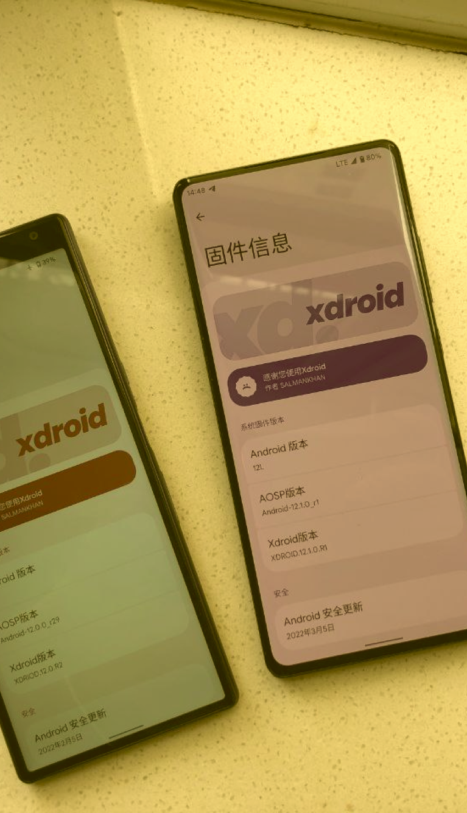

Hi, im
Jody Yuantoro
UI / UX Designer and Android Developer

About me.
I'm 19 years old, i start to learn programming languages when i
was in Junior High School, I'm interested in code because it looks
so cool, and i learn it mostly day by day self taught, i learn
everything through the communities, and several forums on the
internet, in 9th grade of Junior High School i have started
developing to the android ecosystem, after that i continued to
high school, and i majored as social major, i regret taking it,
because what my dream to go PTN taking Informatics was broke, but
my journey did not end there, at that time i still do what i
liked, i do more contribution to the android ecosystem. and the i
very happy cuz i success to create my own android based OS called
xdroid. After i graduated from high school, i have been pass the
SBMPTN exam, i like the PTN but i not with what the major what i
can reach, so i still try to reach my major dream, and then i was
accepted at PTS with my dream major are informatics engineering.
yeah i happy to hear that and I'm proud to be a part of the white
campus <3.